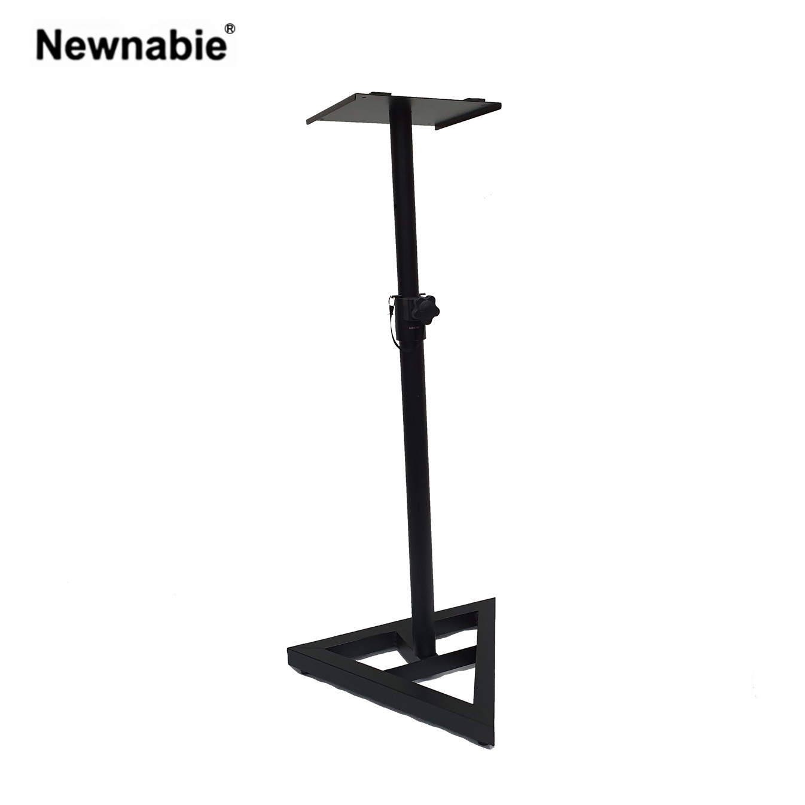

Newnabie NB-061은 홈·프로젝트 스튜디오의 니어필드 모니터 스피커를 위해 설계된 낮은 높이의 스피커 스탠드입니다. 착석 상태에서 귀 높이에 정확히 닿도록 750–1300 mm 범위로 조절되며, 묵직한 스틸 프레임이 저역 진동을 억제해 스튜디오 환경에서 요구되는 정밀 모니터링에 적합합니다.

니어필드 모니터 스피커를 착석 리스닝 포지션에 맞춰 배치할 수 있도록 높이 범위를 낮게 설정한 스튜디오 전용 스피커 스탠드. 묵직한 스틸 프레임이 저역 진동을 억제해 정밀한 모니터링 환경을 만들어 줍니다.
NB-061은 일반적인 PA용 스피커 스탠드(1100 mm 이상)와 달리 750–1300 mm의 낮은 높이 범위를 가지며, 홈 스튜디오·프로젝트 스튜디오·아티스트 데스크 옆 모니터 포지션 등 착석 상태의 귀 높이(대략 1100–1200 mm)에 맞게 스피커를 정확히 배치할 수 있도록 설계되었습니다.
스틸 프레임은 일반 보급형 대비 두껍게 설계되어 있고, 자중 4.3 kg으로 낮은 중심을 확보해 캐비넷 진동·저역 공진을 효과적으로 억제합니다. 대부분의 6.5˝–8˝ 액티브 모니터 스피커(Yamaha HS, KRK Rokit, Genelec 80x 시리즈 등 포터블 급)를 안정적으로 지지합니다.
스튜디오 모니터링에 최적화된 NB-061의 핵심 포인트입니다.
수입원(현대에이브이씨) 유통 기준 사양입니다.
| 모델명 | NB-061 |
|---|---|
| 타입 | Studio Monitor Speaker Stand (스튜디오 모니터 스피커 스탠드) |
| Height | 750 – 1300 mm |
| Material | Steel |
| Net Weight | 4.3 kg |
| 권장소비자가 | 121,000 원 / 조 (VAT 포함) |
※ 본 사양은 수입원(현대에이브이씨) 유통 기준표(2026-01-01) 기재 사항을 기준으로 정리되었습니다.
착석 리스닝 포지션과 저진동이 요구되는 스튜디오·모니터링 환경에 적합합니다.